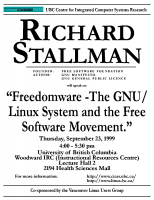

![[ TABLE OF CONTENTS ]](../gx/indexnew.gif)
![[ FRONT PAGE ]](../gx/homenew.gif)

![[ Linux Gazette FAQ ]](./../gx/dennis/faq.gif)


Introduction
Inspired by the informative and entertaining write-ups of Stephen Adler, most
relevantly "An Ode to
Richard Stallman" (LG #37) I
recently took it upon myself to document Stallman's foray into the
Great White North. First a brief introduction. I'm relatively new to
Linux - primarily a Windows and Unix user until about a year ago
thanks to the Linux box that I started using as a graduate student in
astronomy at the University of
Victoria. Since then I've been using Linux every day (and loving it!), while
developing a budding interest in the history of Linux and the free
software movement.
About a month ago, while checking out the VLUG links page I happen to stumble
across the linux.bc.ca website.
Just in time as it turns out, since Richard Stallman is scheduled to
talk on "Freedomware: The GNU/Linux System and the Free Software
Movement" in Vancouver at the University
of British Columbia on Thursday, September 23. As an added bonus, Tim
O'Reilly is speaking on Friday, so if I stay I'm thinking I'll get the
full spectrum of opinions on free software and documentation. Flash
forward to...
I start thinking ahead to Stallman's lecture this afternoon. I'm pretty excited about going to see the man behind GNU, not to mention Emacs, the greatest editor of all-time, ever. Maybe I'll even get to meet the man afterwards... Ulp! From what I've read rms can be a somewhat intimidating fellow. I can just imagine myself saying something foolish to draw his ire. "GNU/Linux," I start repeating to myself. "Not just `Linux,' `GNU/Linux'"!
Pretty soon the bus is parked onboard the ferry and we're shuffled up to the passenger decks. Normally I'm not a big fan of the ferry ride between Vancouver and Victoria. Usually I'm traveling alone and just want to read or sleep but can never find a quiet place to do either. There's always someone nearby talking just loud enough to be a distraction. This time around it isn't that bad, though. I think the key is to spend as much time as possible outside on deck. The morning clouds are starting to burn off and the Gulf Islands can look quite spectacular under a little sunshine. I sit down on a bench, eat a couple sandwiches and snap some pics. Life is good.
The ferry hits land at about 1:40 and the coach drops me off at Cambie and Broadway at 2:30 with plenty of time to spare. I hop on the 99 B-line express that goes west to the university. So there I am standing near the back, minding my own business when I overhear the words "Red Hat" and "Debian" in a conversation behind me. There's an empty seat next to one of the guys talking so I grab it and ask if they're going to the Stallman lecture. Turns out they are - they're comp sci students from nearby Simon Fraser University (SFU). One guy's got a 3 1/2'' floppy in his hand - hoping for an autograph perhaps? He says it's a Linux boot disk with nethack on it. They seem like pretty cool hacker-types and we end up chatting for the rest of the bus ride.
We get off at UBC and after wandering around campus for a while we finally arrive at Woodward IRC lecture hall 2. It's still fairly early yet - there's only a handful of people scattered about the lecture hall. We grab some centre seats about a dozen rows back. One of the guys, Ryan, whips out a laptop, fires up Debian, and starts an X-window session with fvwm as the window manager. (Later we watch in horror as a guy near the front starts up Windows on his own laptop ("wanker"!)). They start playing some game with flying triangles ("bratwurst"?) and a command-line syntax that looks Lisp-like. After a little hacking one of the guys gets a triangle to rotate. Cool!
Finally we catch our first glimpse of Stallman. He looks a lot less imposing than I'd imagined him. (In my mind I'd pictured an immense being with limbs like redwoods and a voice like thunder.) Despite his reputation, I find later that he's surprisingly easy to talk to and generally quite gracious, especially to people asking very basic questions about GNU. He's constantly fiddling with his hair when he's answering a question (looks like he's checking for loose ends) but as long as you have something interesting to say, you have his full attention.
Stallman
The lecture gets underway, and I start scribbling. (Unlike Stephen
Adler, I'm forced to take notes the old fashioned way, with pen and
paper. On the bright side, I don't have to worry about spilling coffee
on my non-existent laptop.) Dr. Rabab Ward, director of the Center for Integrated Computer Systems
Research (co-sponsors of the event along with VanLUG) introduces
comp sci prof Ed Casas who starts telling us about rms until Stallman
complains "You're giving my whole speech!" Thus, the introduction gets
cut short and at last rms steps up to the podium.
The first half of his talk is a retelling of the history of the GNU Project that appears on the GNU website, so I won't bother with a detailed recap. (A complete transcript of my notes appears here.) Even though it was a familiar tale (for me anyway) it was cool to hear it from the man himself. Along the way he extolled the virtues of living cheaply and not being "a slave of a desperate need for money" with expensive habits like "stamps, art, and children!" I guess we won't be seeing any little Stallmans running around anytime soon... He went on to say that as president of the Free Software Foundation (FSF), he decided not to take a cut of the money raised by FSF, since paying himself would be "like throwing money away, because we can get Stallman to work for nothing." So if we like the software he has helped to develop, we could either donate money to FSF or to Stallman himself. Hmm...
In explaining the four freedoms which define free software, he compared new measures being adopted by the US government to deter prohibited copying to those employed by the Russian establishment, and went on to conclude that "nothing but a police state can possibly stamp out freedom 2 [the freedom to redistribute copies so you can help your neighbour]." After describing freedom 3, the freedom to publish an improved version of a program, he mentioned that the Open Source Initiative (OSI) promotes free software by concentrating solely on the benefits of freedom 3. Stallman believes that in doing this OSI is leaving out the most important things GNU has to say, and that, while GNU and OSI are allies with respect to software development, they remain "rivals in the domain of philosophical debate." He also talked about how software can be free for some users and not others, using the licensing of the X Window System as an example (see "The X Windows trap").
He devoted the last part of his talk to issues which must be addressed in order to ensure the continued existence of a free OS five years down the road. First up: the problem of hardware products whose specifications are kept secret by their manufacturers and that can only be operated via proprietary software. The solution to this problem is twofold: 1) discourage people from purchasing hardware that is not supported by free software, and 2) reverse engineer the non-free drivers and write free ones. Secondly, he talked about the pitfall represented by using non-free libraries as a basis for free software development. The obvious example of this is the Qt GUI toolkit used by KDE. GNU is attacking this problem by developing the GNOME desktop environment, as well as the FreeQT toolkit Harmony. Again, Stallman stressed that it is easy to stay out of this trap if you recognize it as an issue. Finally, he made brief mention of the dangers posed by patents, and the patenting of software features and algorithms (e.g. the GIF patent held by UNISYS).
Stallman concluded the lecture by arguing that the Linux community and the Open Source movement endanger the future of free software by failing to recognize the value of the freedom it affords. He cited ads for proprietary software in Linux magazines as an example of encouraging users to give up the freedom they've won by using a free OS. In promoting the name `GNU-slash-Linux' over simply `Linux', his aim is to not only give credit to the authors of the GNU software which makes Linux possible, but also to raise awareness of the philosophy of the GNU Project, perhaps causing users to think about the value of freedom and maybe even inspiring them to defend the free software community when it is endangered.
With that, Stallman opened the floor to questions, the first one being whether he considers any circumstance legitimate justification to write or sell proprietary software. Stallman answered with a succinct "no," but pointed out that 90% of the software industry is about developing custom software ("people don't load sloughware into a microwave"). A guy sitting in front of me asked how programmers would get paid if all software were free. Stallman said that getting paid should be considered secondary to the more important issue of "will people have freedom?" Once that is taken care of, programmers can find new ways to earn a living, e.g. get paid to write free software by companies like Red Hat, or sell copies/support/documentation for free software like GNU.
Someone posed the fundamental question, "Is it ethical to redistribute something that you're not allowed to redistribute?" Stallman replied simply that the lesser of the two evils is to share with your friend. The audience responded with a thunderous ovation. He went on to say that there is a "war against journals" currently being waged in academia. To fight scientific journals that claim sole rights to the articles they publish, Stallman urged us to include the statement "Permission is granted for verbatim copying of this work" on any articles we submit for publication.
At this point Stallman took an extended break to sell GNU manuals, give away stickers, and talk one-on-one with audience members. Of the audience of about 200 people, dozens purchased Emacs and Make manuals which rms patiently signed with his customary "Happy Hacking." (He was noticeably quick to point out the "cheapskates" who asked for signatures on the free FSF brochures that were also being distributed.) This was followed by a final Q & A for the thirty or forty hardcore hackers who had stuck around.
Someone made a comment about linking closed source objects into Linux. Stallman said that Linus made a big mistake when he allowed this to happen. There was a brief discussion of the "Look and Feel" lawsuit which apparently resulted in a tie vote in the US Supreme Court. Since then, industry seems to have lost interest in pursuing it. Stallman, of course, was opposed to the idea of copyrighting an interface. Someone asked the obligatory question about the state of the GNU Hurd. He claimed that there is a working version, but that they haven't yet taken full advantage of the architecture, and that no one is currently working on it full-time. (Seems like the perfect opportunity for a comp sci PhD thesis.) Near the end, a sincere-sounding chap thanked rms for Emacs, and said that, in the 80's, he used to spend a lot of time staring at an Emacs window. Stallman countered, "Does that mean you don't anymore? Emacs misses you. Emacs needs you!" Hee-hee! Great stuff!
It's after 6:30 by this time and I'm getting hungry, not to mention I was supposed to meet the friends I'm staying with at 6:00 (sorry Trish!). Still, I'm hoping to work up the nerve to talk to Stallman and maybe get a picture with him. Just when I'm thinking of taking off, the questions die out and Stallman wraps up the Q & A. Some more people are getting him to sign manuals, so I wait for an opening and ask him if I could make a personal donation to him and not the FSF in appreciation for creating GNU Emacs. He agrees (!) so I whip out $20 and get Ryan to take a couple pictures of this historic transaction. Woo-hoo! My trip is now officially a success! I quickly say goodbye to the guys from SFU and dash off to meet my friends at the bookstore.
His words about not thinking in the `old frame' and adapting to the 'new paradigm' ring hollow considering that O'Reilly & Associates continues to follow a traditional print publication business model. Why not try something truly innovative like selling online access to his books at a reduced price? He ends his talk by imploring the audience to use the new era of Internet and open source to "find a way for people to want to give you money." Not exactly "Ask not what your country can do for you..." as far as inspirational messages go... Afterwards a VanLUG guy mentions that it's O'Reilly day at the University Bookstore (20% off all O'Reilly books), and O'Reilly plugs a new book of UserFriendly cartoons that's coming out soon.
Unlike the Stallman lecture, there seems to be much less of a hacker presence, somewhat understandably since this was a talk about business models. After the moral conviction of Stallman's words yesterday, the things O'Reilly had to say about the new frontier in the software industry paled in comparison. Freedom is something you can laugh, cry, or shake your fist in the air about. And the heart and soul of GNU is a belief in helping others. In comparison, the business of making money is a cold, logical affair that's not very conducive to exciting peoples' passions. After the talk hardly anyone in the audience of about 70 or 80 rushes the stage to talk to O'Reilly like they did yesterday with rms.
When it's all over I shuffle off to the bookstore to check out the O'Reilly's. But before I get there I've already made up my mind not to buy anything. Stallman got to me. I can't buy another "animal book" in good conscience, at least not until I give it some serious thought. It's just as well - Dynamic HTML: the Definitive Reference is selling for $57. Even with the 20% discount, that's more than I'm willing to pay for information that I can probably find for free on the web. Granted it might not come in the form of a nicely bound softcover that I can peruse whilst sitting on the john... I guess that's what Stallman meant yesterday when he was talking about sacrificing convenience for freedom. With that thought in mind I hop on a bus and start the long journey home...
finis
Editor's note
If you didn't follow the links to Hayashi's notes
above, they are definitely worth a read. Here are the links again: